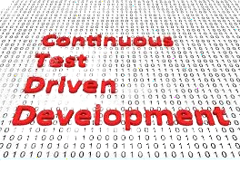

Continuous Test-Driven Development (CTDD) on tarkvaraarenduse metoodika, mis hõlmab pidevat testimist kogu arendusprotsessi jooksul, alates koodi loomisest kuni rakenduse väljalaskmiseni. See metoodika rõhutab testimise automatiseerimist ja pidevat tagasisidet.
CTDD protsess hõlmab testimise automatiseerimist ja testide integreerimist arendusprotsessi igas etapis. Arendajad kirjutavad teste enne koodi loomist ja testid käivitatakse pidevalt, et tagada rakenduse stabiilsus ja kvaliteet.
Üks CTDD olulisemaid eeliseid on kiire tagasiside arenduse kvaliteedi kohta. Kuna testid käivitatakse pidevalt, avastatakse ja lahendatakse probleemid kiiresti, mis võimaldab arendajatel vältida vigu ja rakendada parendusi juba varases staadiumis.
Lisaks aitab Continuous Test-Driven Development suurendada arenduse kiirust ja efektiivsust, kuna testimine automatiseeritakse ja teostatakse kiiresti ning tagasiside antakse kohe, võimaldades kiiret reageerimist.
Lõpuks, CTDD soodustab ka pidevat täiustamist ja iteratiivset arengut, kus arendusmeeskond püüab pidevalt parandada ja optimeerida rakenduse kvaliteeti ja jõudlust.